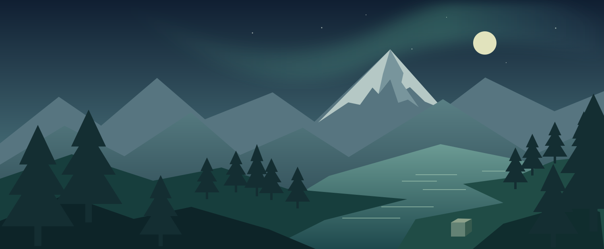

MINECRAFT JAVA EDITION
Библиотека сборок.
Версии Minecraft, моды и ресурсы для каждой сборки.

НОВОЕ ПРИКЛЮЧЕНИЕ
Большой мир.
Твоя история.
Собери свой Minecraft. Добавь любимые моды.
Позови тех, с кем хочется исследовать.
01 / ∞
НАЧНИ С ЧИСТОГО МИРАВсё остальное — в твоих руках
Моя библиотека 0
Создай сборку или импортируй готовую
Официальный аккаунтБезопасный вход через Microsoft
Каждая сборка отдельноСвои моды, миры и настройки
Лучше вместеОбщие файлы и история изменений
ДВА КАТАЛОГА. ОДНА БИБЛИОТЕКА.
Больше, чем просто Minecraft.
Сборки, моды, ресурспаки и шейдеры из Modrinth и CurseForge.
◉ Modrinth◆ CurseForge
Модпак создаст отдельную сборку
Открой новое
Впереди целая вселенная
Выбери тип ресурсов и нажми «Найти».
ОДНА СБОРКА. ОБЩАЯ ИСТОРИЯ.
Приключения лучше вместе.
Синхронизируйте моды и конфиги. Следите за каждым изменением.
Присоединиться к друзьям
Получи адрес и отпечаток сервера у владельца.
Создать своё пространство
Этот компьютер будет хранить общую сборку и журнал.
Только файлы сборки
Общий доступ охватывает mods, config, resourcepacks, shaderpacks, defaultconfigs и kubejs. Миры и аккаунты остаются на твоём компьютере. Синхронизация ручная; журнал обновляется каждые 15 секунд.
Для друзей через интернет компьютеру владельца нужен доступный адрес и открытый порт либо общая VPN-сеть. Встроенный сервер работает, пока Aurora открыта. Это сервер файлов сборки, а не игровой сервер Minecraft.
Общая история
НИЧЕГО НЕ ТЕРЯЕТСЯ
История твоей сборки.
Файлы, события и журнал работы Minecraft.
Изменения файлов
Консоль игры
Здесь появится журнал запуска Minecraft.
ПАРАМЕТРЫ ПРИЛОЖЕНИЯ
Настройки.
Аккаунт, производительность и подключения.